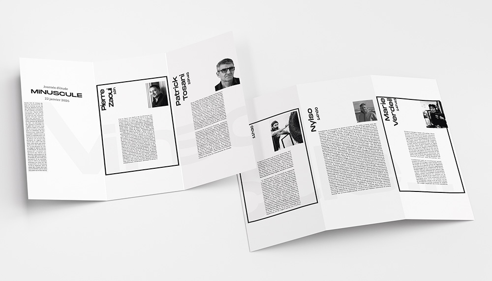

Une journée d’étude sur le thème du « minuscule » a été organisée à l’université de la Sorbonne. Une recherche réalisée en amont a été menée pour explorer cette notion, suivie par la création de flyers et d’affiches publicitaires. Le projet a d’abord pris forme à travers des croquis et la réalisation de maquettes papier, des dépliants, avant d’être finalisé sur le logiciel InDesign.
DESIGN GRAPHIQUE
MINUSCULE
